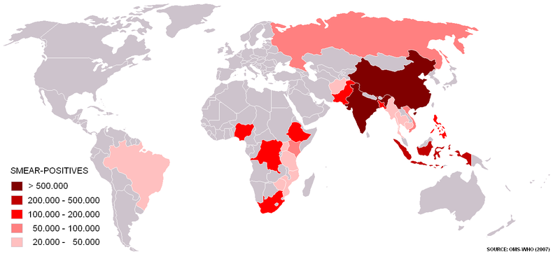

Mapa de casos de resultados positivos para tuberculose no mundo.

Mapa dos países onde 80% dos casos de tuberculose estão concentrados. China e Índia são os países mais afetados, clique neles para saber mais no site da OMS.